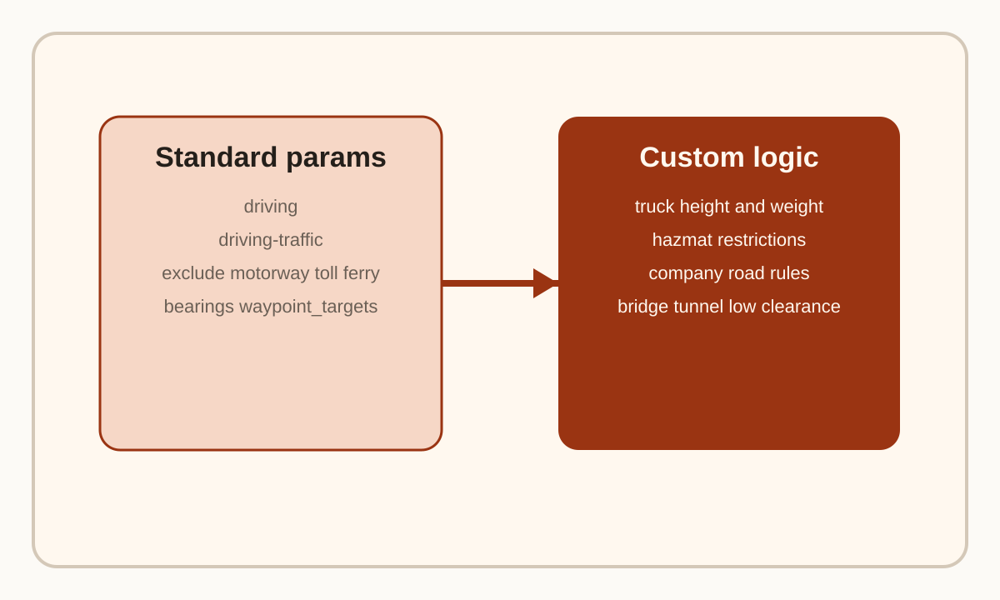

Question Note
Mapboxでルート案内条件をどこまで設定できるか

Mapboxで「高速道路優先」「下道優先」「大型車向け」などのルート案内を作るときは、 まずDirections API と Navigation SDK で標準対応している条件と、 自前ロジックが必要な条件を分けて考える必要があります。
標準で触れる主な条件
| 目的 | 使うもの | 補足 |
|---|---|---|
| 通常の車ルート | `mapbox/driving` | 高速道路を好む一般的な自動車ルート |
| 交通考慮ルート | `mapbox/driving-traffic` | 対応地域では交通情報を考慮する |
| 高速道路を避ける | `exclude=motorway` | 高速道路や motorway を除外する |
| 有料道路を避ける | `exclude=toll` | 料金所ルートを避ける |
| フェリーを避ける | `exclude=ferry` | 水路横断を避ける |
| 未舗装路を避ける | `exclude=unpaved` | ダートやトラック道を避ける |
高速道路優先と下道優先
高速道路優先は、実質的には `mapbox/driving` か `mapbox/driving-traffic` を使うのが基本です。 一方で「下道優先」は専用の `prefer_local_roads=true` のような単独パラメータが見当たらないため、 実務上は `exclude=motorway` を使って高速道路を除外する構成になります。
つまり、厳密には「下道を好む」というより「高速道路を避ける」に寄せる考え方です。
再ルートや進行方向制御で効くもの
- `bearings`: 現在の進行方向に近い道路へルートを乗せたいときに使う
- `avoid_maneuver_radius`: 再ルート直後の危険な急操作を避けたいときに使う
- `waypoint_targets`: 道路の左右どちら側に目的地があるかを考慮したいときに使う
大型車向けの案内について
ここが重要です。今回確認した公式のDirections APIドキュメント上では、 車高、車幅、重量、危険物区分、トラック専用プロファイルのような 大型車ルーティング専用パラメータは見当たりませんでした。
そのため、大型車対応を本気でやるなら、Mapbox標準ルートをそのまま信じるのではなく、 低床橋、重量制限、車高制限、通行区分などを自社データとして持ち、 ルート計算前後で独自判定を挟む設計が必要です。これは公式資料からの直接記述ではなく、 標準パラメータの範囲から導ける実装上の判断です。
現実的な構成
- 普通乗用車向け: `driving` または `driving-traffic` を中心に使う
- 下道優先: `exclude=motorway` を軸にする
- 有料回避: `exclude=toll` を併用する
- 大型車向け: Mapbox標準案内に独自制約データと業務判定を追加する
要点
Mapbox標準で強いのは、一般車向けルート、交通考慮、いくつかの除外条件です。 逆に、大型車特有の制約は今回確認した範囲では標準パラメータだけでは足りません。 乗用車ナビと業務車両ナビを同じ設計で考えないことが重要です。